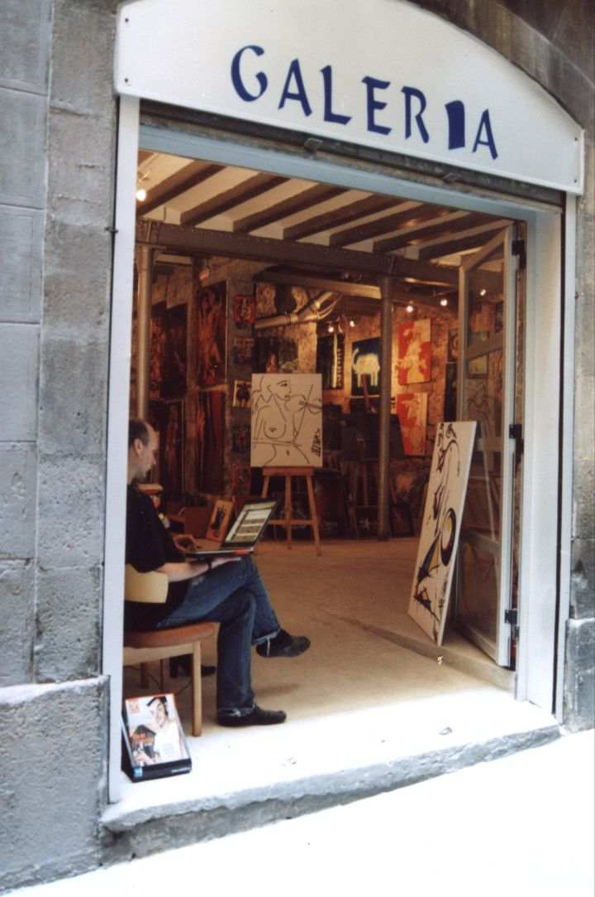
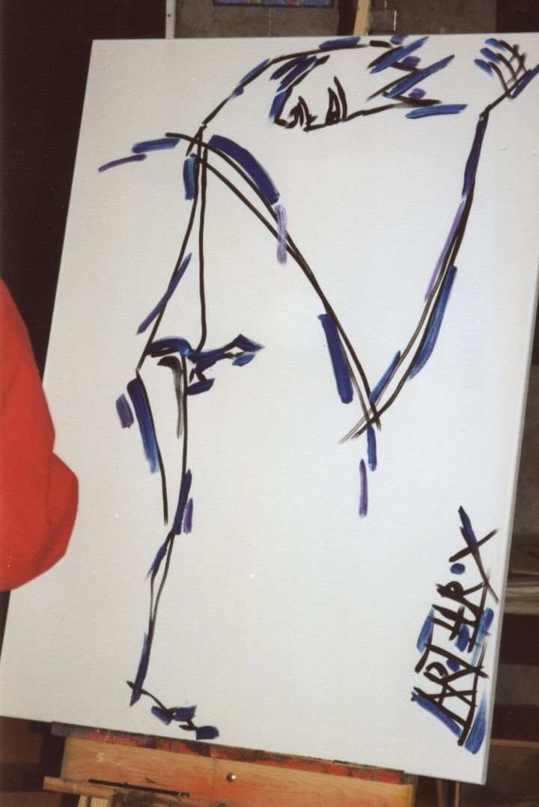

ArthurX in Barcelona, April 2006.
Galeria Art-Works,
Calle de Paradis 3.
In the gothic heart of Barcelona
between Place de St Jaume,
the cathedral Seu and
the temple of Augustus.
A sainter place hard to find.
Above three levels of Roman cellars.
In the shade of a five story alley.
The Catalan President sleeping at it's back.
Demonstrations around the corner,
Crying for the release of innocent murderers.
Is there a better place to create paintings?


height.jpg )


Toni, the galery director, converses with the artist in the middlest
of the act
of creating the painting.
It's almost finished, but he wants some changes in the colorsetting.
The blue above the left eye is still lacking.
It's time for a mini break.
Knows the galerist with full conscienceness and beyond doubt,
what kind of a beast of an artist he has invited?
Does he really like this kind of art?
That were the questions tormenting the artist
during the first two painitngs and days.
You only can paint tits,
with a slightly opened mouth.
And it's still dripping.
I'm just a serious schoolboy,
lost in concentration.

We were walking into a church on early Saturday morning.
The local scoutsman had lured the small boys out to his wild powers.
Inside there was a small orchestra rehearsing.
With an unexpected freshness.
And one of the violistes was above admiration.
Somehow she attracted all attention.
It's not often that you can have a photo
in which the perspective is so close to that of the painter.
It is hard thinking to find out,
which line not to paint.
Especially when the violist girl you're trying to paint,
has such a strong neck line.
The photo above doesn't reveal the neckline,
but the the shape and the location of the tits
is remarkable close.
(Never would believe that anything I paint has so much to do with reality)
In front of the Hotel in the Calle d'Avinyo was a small ecoshop,
where they happened to sell tuff, hard, dark bread,
on which you can live for some days.
Nobody cares for bread,
but without smiles we all would die here, right now, in a split second.
And this is one of those life saving smiles.

The president sleeps behind those bars.
Even not a golden cage.
It's at the corner of the galeria.
Around the other corner of the galeria,
slightly uphill to the temple of August
only three colums left over ofter centuries of recycling,
There is a view on the Cathedral.
So for tourists, who want a nice snapshot,
this special painting,
to commemorate this gothic fiesta:
"Cathedral Seu de Calle de Paradis."
The colors of HushHushWomanCat are almost finished,
but it's clear that the reworking of the black lines
adds a great deal to the end effect.
The ArthurX factor is growing.
There is no way of denying it.
Starts looking like "ArthurX has been here!"
I don't know what we were talking about.
But it looks extremely polite.
From both sides.

The galery owner going over the daily job of spamming the world.
"Yes, I'm alive and kicking."
Actually, this is one of the quiter parts of the day:
Normally he is bussy scaring away tourists,
In the midst of taking pictures.
The painting is finished.
It was quite a struggle.
You start from a sketch,
and you think this will do,
but when you scale it up to the size of a real painting,
you start feeling that you lack some lines
that you need more detail.
For example the leg was one surface
and the tits also had only the nipples
and the lips were also one elongated curl.
Then you sit in front of the painting,
on Toni's chair,
doubting,
where you can add another line,
without making it all to tiny and detailed
and which line will add the most to
the feeling, story and expression of the painting?
This paintings are in a different style.
If I divide my paintings in two corse groups:
I have the filled surfaces surrounded by black lines at one hand,
And these above at the other hand.
They are build up around a scelletton of black lines.
I never can escape the black.
If I take out the black, it's no longer mine.
The black scelletton is later on grown,
by adding colored lines,
Like feathers.
These two paintings are in that style.
As soon as I saw the violiste,
realized I needed some inspiration for a new painting
and had taken the breathe to sketch in the church,
It was finished.
A sketch is only to memorize the angles of lines.
To try them out.
We left the church when they started singing anti racisme songs.
White grandmothers with their colored not grandchildren.
And viceversa.
And there was a French Canadian from the hostel coming to the galery.
She looked downward to her papers,
doing some ordering of new goods for in the shop,
standing behind the counter.
Breakfast at the harbor
Everyday
The calling of the sea.
The first color
on the first painting
on the first day.
Elizabeth takes photo's and nothing has happened yet.
Here ArthurX explains about the leg to Lorena.
The thigh, upper part of the leg, is cut in parts, while it could have been one part.
It's an answer to Lorena's question about the round ball at the end of the leg.
She was hoping that it would become a moon.
It was already half colored: blue and purple.
Because she said, a woman and moonlight that has some meaning.
I could not dismiss that.
But the round ball should be all red.
And the thigh all blue.
Now I had cut it all to pieces,
because only the red and blue would be to hard.
But still in my hearts of hearts
I hope to one day make it again
with the red ball and the blue thigh.
A photogenetic palm
to suggest that it is here so nice and warm all year around.
Fools from the North buy it.

The title of this painting is:
PizzaGirl El Born
Elizabeth always presses me to make a title.
And OK I agree: better a title than a number.
It's supposed to be the girl of the photo below.
Everyday at lunch time, we went out.
Took a stroll in the direction of the Parc de la Ciutadella.
And half way on El Born was a Pizza Bar.
Packed till the rim with students for the deal of the day:
Two slices and a drink for €3.50
The girls run the show together.
In an upbeat mood.
The last day the old boss showed up
and all charm had dissappeared.
It suddenly looked like five Cinderella's,
abused by a stepfather
enslaved for ever in the pizza breeding furnaces of El Born.
I'm a poor boy, so I could not buy them free.
But I know that many of the boys there, or the young employed
after a beer or three
will do the same.
The last day I made this photo.
The boy in front held his arm to shield the camera.
So she doesn't know,
about the photo or the painting.
So if you see her, don't tell her,
We were just silly tourists.
Eating the same slices everyday.
Here Toni again,
But Look!
You see his daughter
Hiding behind his belly.
This is the building up of the painting of Anna d'Avinyo.
The sketch shows a larger part of her body,
But so what!
Lorena wanted her all complete on the painting.
OK, I make this promise:
Next time more AnnA's
What is this?
The famous Barceloneian mafioso "El Duce" is crossing the street.
And he takes an interested look to "PizzaGirlElBorn".
This looks like good bussiness.
His bodyguards try to refrain him from this impulsive purchase.
Too little, too late.
The painting was sold three hours after its creation.